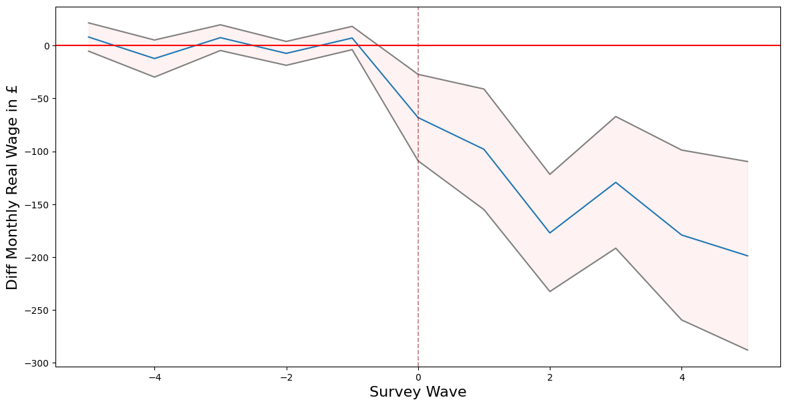
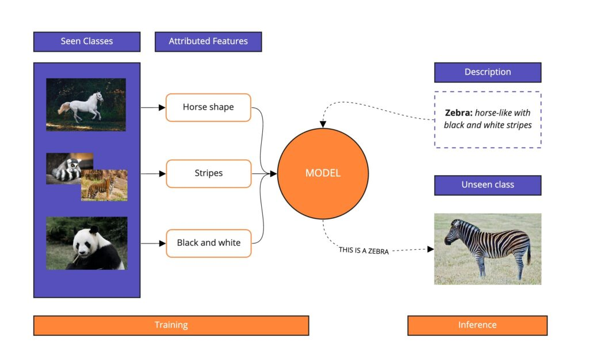
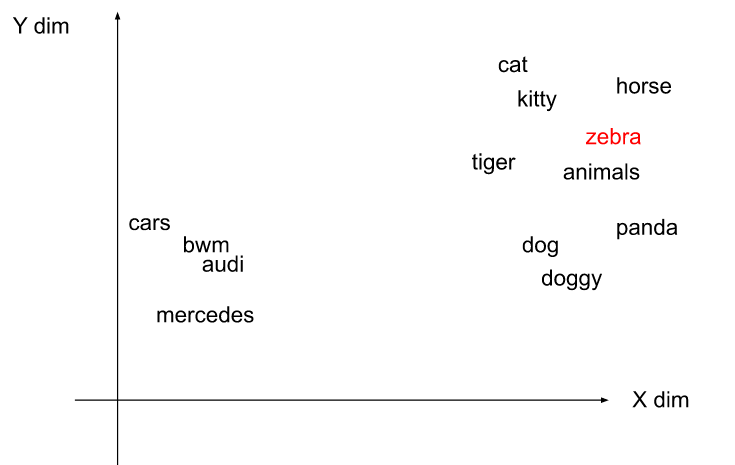
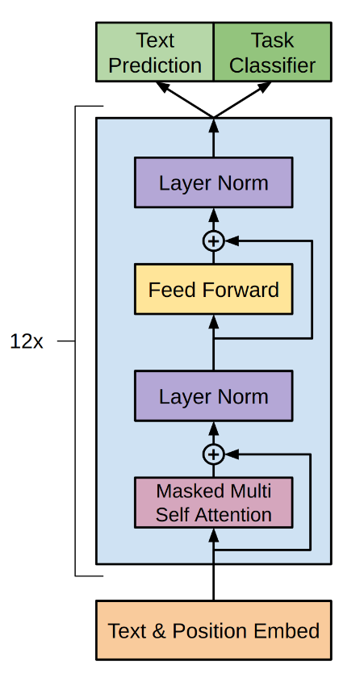

Current Projects
Daniel Valdenegro1, 2
1Leverhulme Centre for Demographic Science, University of Oxford
2Centre for Care, University of Oxford
Cost of Care:
Estimating structural inequalities in carers income.
Daniel Valdenegro1
Charles Rahal1
Yanan Zhang2
Maria Petrillo3
Matthew Bennett3
Gwilym B. Pryce3
1Leverhulme Centre for Demographic Science and the Centre for Care, University of Oxford
2Oxford Institute of Population Ageing, University of Oxford
3Centre for Care, University of Sheffield
Antecedents
The issue
- Low fertility rates coupled with advancements in longevity have simultaneously increased demand for -- and reduced the supply of -- social care.
- The demand of care is being suplied by informal unpaid carers.
- We lack reliable, causal estimates of the effect that providing this care has, and what optimal policy responses should be.
- We also lack an understanding of how unequal these inter-sectional costs might be.
Research Questions
- What are the differences in net household income in real terms between carers and non-carers across time?
- How do these effects aggregate up from the micro, to the meso and macro levels?
- How are these effects stratified across age, gender, ethnicity or geo-spatial location?
- How do we estimate this!?
Data
UKHLS Survey
- Large, decade long, representative household panel study, covering around 40K households.
- Collects information about income of the individuals as well as their care responsabilities.
- Provides plenty of demographic variables to stratify.
- Provides low level geo-spatial data of the household.
- So far so good...
Method
We draw inspiration from this amazing paper:

...Which in turns draw inspiration from this other amazing paper:

So... What is this Synthetic Control Method?
Asumming we have time series data from a unit that received some "treatment" at some time "T0", and data from units that didn't recived the treatment, the idea is to create an equivalent "control" unit based on the data from the untreated units. This synthetic control should behave very similar to the trated unit up until the moment of treatment, where it should behave as if nothing has happaned.
More formally...
The synthetic control method proposed that a weighted sum of similar untreated units might aproximate well to an untreated version of our unit of interest: \[ \begin{equation} \hat{Y}_{0_{t}}(0) = \mu + \sum^{N}_{i=1}\omega_{i} \cdot Y_{i_{t}} \end{equation} \] Meaning that a series of weights $\omega$ for every control units, multiplied to the value of $Y$ of each control unit $i$ at every step $t$ will yield the value $\hat{Y}_{0}(0)$ of our synthetic untreated unit for every step $t$.
More formally...
Now, intuitively, the next step is to figure out a way to find the correct weights $\omega_{i}$ and $\mu$. Since we are mostly interested in finding a synthetic control for a treated unit that is equivalent up to the moment of the treatment, we should only take into account the data up to $T_{0}$ to create the weights. More formally, we are interested in finding a vector of weights that minimises the difference between our treated unit and the synthetic control: $$ \begin{equation} (\hat{\mu}, \hat{\omega}) = \underset{\mu, \omega}{\operatorname{argmin}} \sum_{t=1}^{T_{0}}\left(Y_{0_{t}} - \mu - \sum^{N}_{i=1}\omega_{i} \cdot Y_{i_{t}} \right)^{2} \end{equation} $$
More formally...
The above expression is essentially a least squares solution to the problem. However, there is reason to avoid OLS, one of them being overfitting. One of the ways to prevent such problem is to impose some restrictions: $$ \begin{equation} (\hat{\mu}, \hat{\omega}) = \underset{\mu, \omega}{\operatorname{argmin}} \sqrt{\sum_{t=1}^{T_{0}}\left(Y_{0_{t}} - \mu - \sum^{N}_{i=1}\omega_{i} \cdot Y_{i_{t}} \right)^{2}} \\ \end{equation} $$ $$ \textrm{s.t.} \quad \mu=0; \quad \sum^{N}_{i=1}\omega_{i}=1; \quad \textrm{and} \quad \omega_{i} \ge 0 \quad \forall i $$ In other words, no intercept, all weights must sum to 1, and no-negative weights.
A toy example...
import random
import math
import pandas as pd
import matplotlib.pyplot as plt
def gen_data(steps, cases):
X = list(range(1,steps))
c = []
for i in range(0, cases):
y = []
py = random.gammavariate(2, 2)
for x in X:
yi = py + random.gauss(0, 1)
py = yi
y.append(yi)
c.append(y)
df = pd.DataFrame(c).T
df.columns = [f'c{x}' for x in range(1, cases+1)]
t = []
py = 0
for i, x in enumerate(X):
if i <= 50:
yi = py + random.gauss(0, 1)
py = yi
else:
yi = py - random.gammavariate(1,1)
py = yi
t.append(yi)
T = pd.Series(t)
df['t'] = T
return df
A toy example...

A toy example...
def argmin_w(W, Y_i, Y_0):
return np.sqrt(np.sum((Y_0 - Y_i.dot(W))**2))
def get_w(Y_i, Y_0):
w_start = [1/Y_i.shape[1]]*Y_i.shape[1]
weights = minimize(partial(argmin_w, Y_i=Y_i, Y_0=Y_0),
np.array(w_start),
method='SLSQP',
constraints=({'type': 'eq',
'fun': lambda x: np.sum(x) - 1}),
bounds=[(0.0, 1.0)]*len(w_start),
)
return weights.x
weights = get_w(Y_i, Y_0)
synth = df.drop(columns='t').dot(weights)
A toy example...

Preliminary Insights
The original formulation of SCM is very computationally inefficcient

It takes around 2 minutes to find the weights on a sample of a conservative 1000 cases over 100 steps (or 10 covariates with 10 steps) for 1 treated case. For a conservative ~200 treated cases, this would take 6 hours. If we want to bootstrap, could take days.

We propose to reduce the numbers of controls cases on which to look-up to save computational time, by first running K-nearest-neighbors algorithm and select the K nearest. This makes the process ~100 times fasters.
Data preparation
Take cases with at least 3 measures before treatment
Data preparation
Reindex based on treatment time.
Data preparation
Find control cases with the same waves.
Data preparation
Repeat the process for every treated case.
There is an initial effect of care responsabilities on net income!

There is an initial effect of care responsabilities on net income!

LLMs for Zero-Shot classification:
Automatic annotation of climate related parliamentary discussions using LLMs.
Daniel Valdenegro1
Viktoria Spaiser2
Nicole Nisbett2
The problem
- Large ammounts (in the order of the tens of thousands) of un-annotated extracts from parliamentary debates.
- Highly complex and nuanced categories for the classification.
- Lack of training data for such categories.
- What to do? Is this hopeless?
Proposed solution: Zero-Shot Classification

- A pretrained model used to infer an unseen category.
- The model needs to be able to receive context information about the new category.
Zero-Shot Classification: The old way...

- We take the context vector and the new data and calculate thier possition in the vector space.
- Then we use cosine similarity to calculate the probabilities of each class.
- Given two n-dimensional vectors of attributes, $x$ and $y$, the cosine similarity, $cos(θ)$, is represented using a dot product and magnitude as:
$$ Cosine(x,y)= cos(θ) = \frac{x \cdot y}{|x||y|} $$
Zero-Shot Classification: The old way...
from transformers import pipeline
pipe = pipeline(model="facebook/bart-large-mnli")
pipe("I have a problem with my iphone that needs to be resolved asap!", # text to classify
candidate_labels=["urgent", "not urgent", "phone", "tablet", "computer"] # context sequence,
)
# output
>>> {'sequence': 'I have a problem with my iphone that needs to be resolved asap!!',
'labels': ['urgent', 'phone', 'computer', 'not urgent', 'tablet'],
'scores': [0.504, 0.479, 0.013, 0.003, 0.002]}
However, zero-shot classification is a feature that improves as the size of the models increases. Bigger, more complex models perform better at this task.
Additionally, we would like to provide "corrections" to the model in real time, something the this traditional approach does not allow.
Zero-Shot Classification: The new way...

- We will use large generative models to perform zero-shot classification.
- We will provide the model with definitions and examples to perform the classification in the context sequence.
- The model will then complete the classification using the most likely outcome sequence of tokens, based on the context provided.
Live Example
Zero-Shot Classification: The new way... Drawbacks
- The classification is performed based on token prediction and not based on cosine similarity (see examples).
- Very Large Models requires special hardware.
- Best performing models are closed-sourced.
Zero-Shot Classification: The new way... Our Framework
- ~700 extracts, manually annotated as testing set, to test accuracy.
- Treat each classification as an independent annotator.
- Perform several classification over the testing set using closed-source and open-source models, with several hyper-parameters each.
- Calculate inter-rater score among the annotator models.